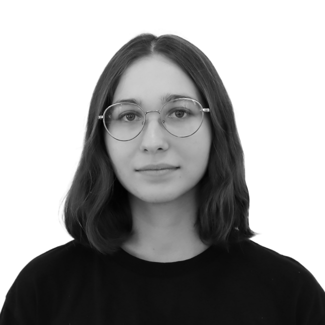

Olena Bondar
Graphic Designer
Contacts
Skills
Design
- Traditional drawing
- Composition
- Perspective
- Colour theory
- History of Arts
- Graphical Design
- Branding (logo design and corporate identity)
- Design for science article and grants
Design programs
- Adobe Illustartor
- Adobe Photoshop
- Figma
- Blender
- Canva
Education
Kyiv National University of Technologies and Design | KNUTD
2019 - 2023
Bachelor’s degree in graphic design
Languages
- Ukrainian: С2 (native)
- English: B2
- russian: wish to forget
your ad can be here
Profile
I am a graphic designer with more than 5 years of experience in design and illustration for scientific purposes. I have been working as a freelancer since 2019 and provide graphic support for a wide range of scientific projects: articles, presentations, journal covers, COST-based projects and other grant projects. I also hold the position of Website Coordinator in an international company in the hospitality and hotel business. I am now immersed in the world of front end and I hope it will not "end" me.
Experience
Freelance
2019 - now
- Scientific design (presentations, covers, illustrations for articles)
- Corporate design (logo design, business cards)
- Visuals for social media (covers, infographics, posts)
- Printed materials (large posters, banners, flyers, brochures, menu)
- Communication with customers
- Working with limited time and deadlines
Web Coordinator
PKF hospitality Gmbh | Ukraine, Kyiv
September 2022 - now
Webssite:
- Website coordination and administration
- orking with Umbraco Cloud software
- Keeping websites up to date, adding content to the website
- Troubleshooting
- Using HTML and CSS for updates inside the platform
- Domains managing
- SEO management for websites
Design:
- Designing visuals for social media
- Working with presentations
- Creating covers for the website
- Printing materials for forums and roundtables, working with the brandbook
- Corporate design (business cards, CVs, corporate photos, banners, printing materials)
Projects
Illustrations for science articles
- State-of-the-Art, Insights, and Perspectives for MOFs-Nanocomposites and MOF-Derived (Nano)Materials - 21 April 2025 - Wiley Online Library – Advanced Materials.
- Unravelling the Potential of Crude Enzyme Extracts for Biocatalyst Entrapment in Metal–Organic Frameworks - April 11, 2025 - The American Chemical Society.
- Zirconium vs. hafnium: a comparative study of mesoporous MOF stability - Chemical Communications.
- Identifying synthetic variables influencing the reproducible microfluidic synthesis of ZIF nano- and micro-particles - Communications Materials.
- Biomedical Metal–Organic Framework Materials: Perspectives and Challenges - Wang - 2024 - Advanced Functional Materials - Wiley Online Library.
- Multilength Scale Hierarchy in Metal‐Organic Frameworks: Synthesis, Characterization and the Impact on Applications - Tsang - 2024 - Advanced Functional Materials - Wiley Online Library.
- In Situ Study of the Activation Process of MOF-74 Using Three-Dimensional Electron Diffraction - Chemistry of Materials.
- Metal-organic frameworks for the capture of dissolved CO2 and generated carbonate ions from water – Research Square.
- Special Issue: ‘Chemistry in Ukraine’- The Chemical Record: Volume 24, Issue 2 - Wiley Online Library.
- The Importance of Dean Flow in Microfluidic Nanoparticle Synthesis: A ZIF‐8 Case Study - Yu - 2024 - Small Methods - Wiley Online Library.
Covers for scientific journals
- Polymer Brushes Synthesized by the “Grafting-through” Approach: Characterization and Scaling Analysis - Langmuir cover - November 12, 2024 - Volume 40, Issue 45.
- Nano-to-Macroscale Reticular Materials to Address Societal Challenges (Adv. Funct. Mater. 43/2024) Ettlinger - 22 October 2024 - Advanced Functional Materials - Wiley Online Library.
- Special Issue: Chemistry in Ukraine - The Chemical Record: Volume 24, Issue 2 - 08 February 2024 - Wiley Online Library.
- How Reproducible are Surface Areas Calculated from the BET Equation? (Adv. Mater. 27/2022) - Inside Back Cover - 07 July 2022 - Advanced Materials - Wiley Online Library.
- Reticular Nanoscience: Bottom-Up Assembly Nanotechnology - Journal of the American Chemical Society (JACS), April 7 2022, 144, 17, 7531–7550.